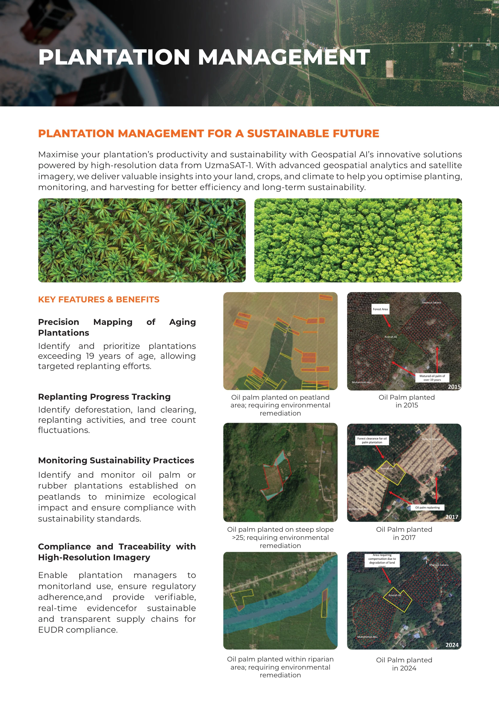
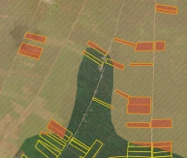
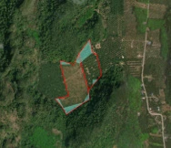
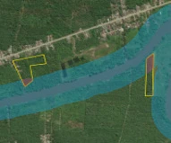
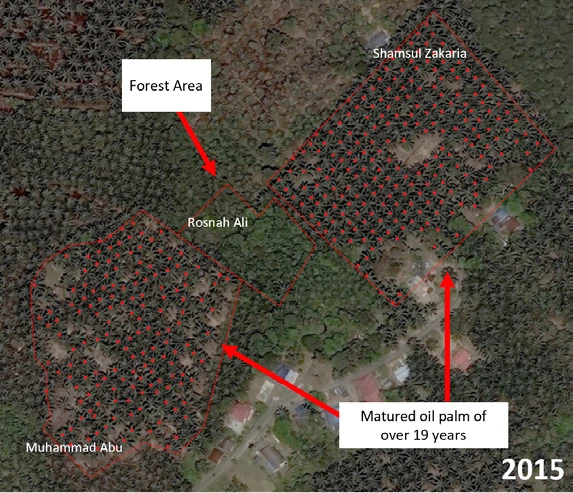
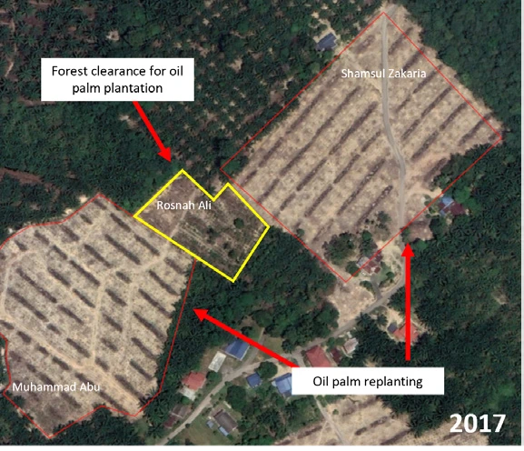
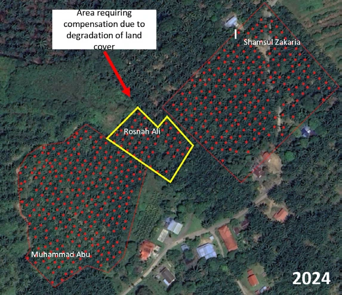
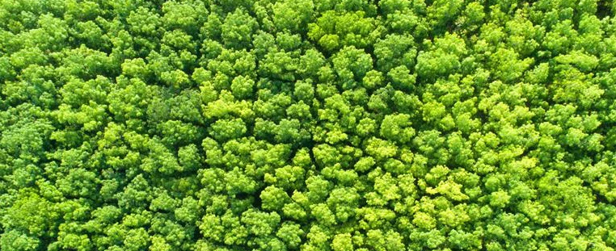
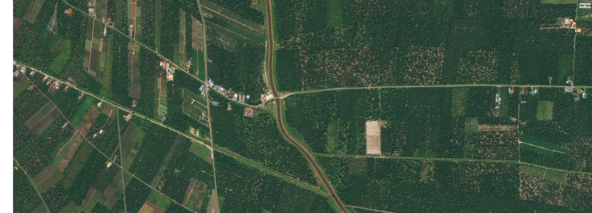

Plantation management for a sustainable future.

Productivity and sustainability
High-resolution data from UzmaSAT-1, geospatial analytics and satellite imagery provide insights into land, crops and climate. Optimise planting, monitoring and harvesting for better efficiency and long-term sustainability.
Key features & benefits
- Precision mapping of aging plantations: identify and prioritise plantations exceeding 19 years of age for targeted replanting.
- Replanting progress tracking: identify deforestation, land clearing, replanting activities and tree-count fluctuations.
- Monitoring sustainability practices: identify and monitor oil palm or rubber plantations on peatlands to minimise ecological impact and support sustainability standards.
- Compliance and traceability with high-resolution imagery: monitor land use and provide verifiable, real-time evidence for sustainable, transparent supply chains and EUDR compliance.
Examples in the imagery
- Oil palm on peatland requiring environmental remediation.
- Oil palm on steep slopes above 25, as labelled in the brochure, requiring environmental remediation.
- Oil palm within riparian areas requiring environmental remediation.
- Comparison imagery showing oil palm planted in 2015, 2017 and 2024.
In pictures

{kind=link}
{kind=link}

{kind=link}
{kind=link}

{kind=link}
{kind=link}

{kind=link}
{kind=link}

{kind=link}
{kind=link}

{kind=link}
{kind=link}

{kind=link}
{kind=link}

{kind=link}

{kind=link}
{kind=link}

{kind=link}
{kind=link}
{kind=link}
Read the complete source transcript
PLANTATION MANAGEMENT FOR A SUSTAINABLE FUTURE
KEY FEATURES & BENEFITS
Maximise your plantation’s productivity and sustainability with Geospatial AI’s innovative solutions powered by high-resolution data from UzmaSAT-1. With advanced geospatial analytics and satellite imagery, we deliver valuable insights into your land, crops, and climate to help you optimise planting, monitoring, and harvesting for better efficiency and long-term sustainability.
Identify and monitor oil palm or rubber plantations established on peatlands to minimize ecological impact and ensure compliance with sustainability standards.
Enable plantation managers to monitorland use, ensure regulatory adherence,and provide verifiable, real-time evidencefor sustainable and transparent supply chains for EUDR compliance.
Precision Mapping of Aging Plantations
Replanting Progress Tracking
Monitoring Sustainability Practices
Compliance and Traceability with High-Resolution Imagery
PLANTATION MANAGEMENT
Identify and prioritize plantations exceeding 19 years of age, allowing targeted replanting efforts.
Oil palm planted on peatland area; requiring environmental
remediation
Oil palm planted on steep slope
>25; requiring environmental
remediation
Oil palm planted within riparian
area; requiring environmental
remediation
Oil Palm planted
in 2015
Oil Palm planted
in 2017
Oil Palm planted
in 2024
Identify deforestation, land clearing, replanting activities, and tree count fluctuations.